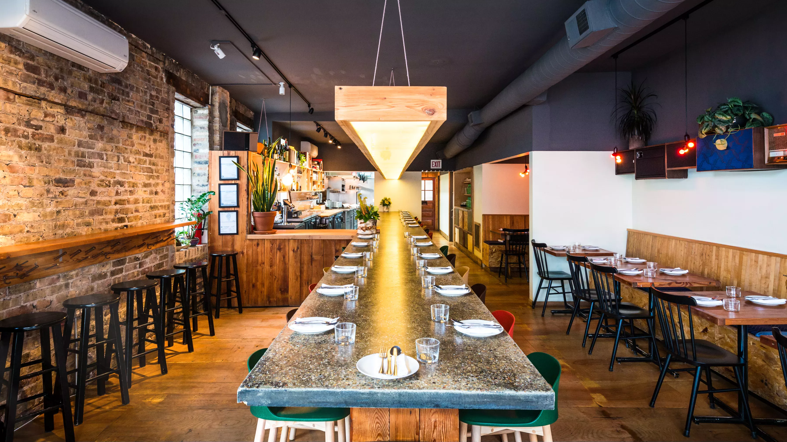
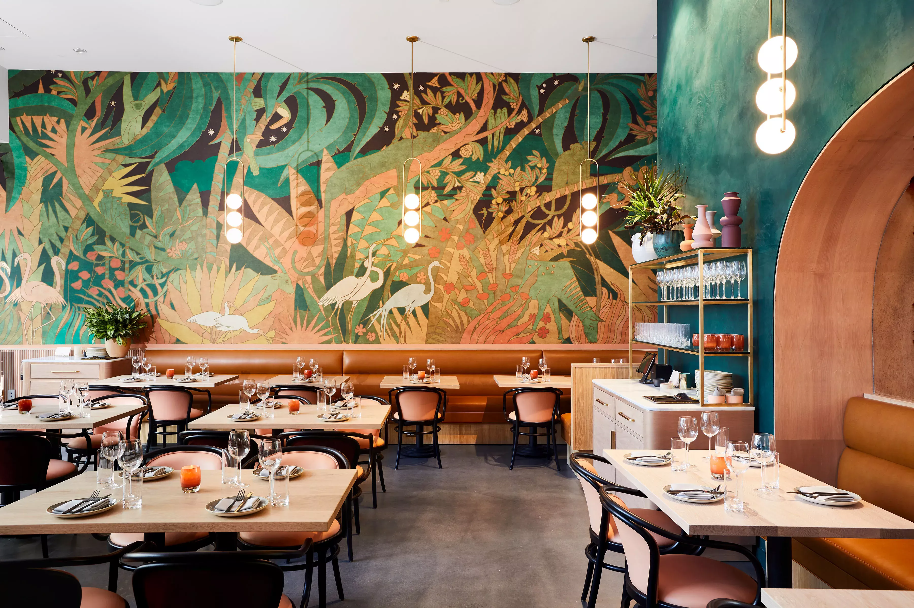

<div class="top-section-container">
    <div class="layout"></div>
    <div class="custom-shape-divider-bottom-1670252671">
      <svg data-name="Layer 1" xmlns="http://www.w3.org/2000/svg" viewBox="0 0 1200 120" preserveAspectRatio="none">
          <path d="M892.25 114.72L0 0 0 120 1200 120 1200 0 892.25 114.72z" class="shape-fill"></path>
      </svg>
    </div>
    <div id="carouselExampleFade" class="carousel slide carousel-fade" data-bs-ride="carousel" data-interval="5000">
        <div class="carousel-inner">
          <div class="carousel-item active">
            
          </div>
          <div class="carousel-item">
            
          </div>
          <div class="carousel-item">
            
          </div>
          <div class="carousel-item">
            
          </div>
        </div>
        <button class="carousel-control-prev" type="button" data-bs-target="#carouselExampleFade" data-bs-slide="prev">
          <span class="carousel-control-prev-icon d-none" aria-hidden="true"></span>
          <span class="visually-hidden">Previous</span>
        </button>
        <button class="carousel-control-next" type="button" data-bs-target="#carouselExampleFade" data-bs-slide="next">
          <span class="carousel-control-next-icon d-none" aria-hidden="true"></span>
          <span class="visually-hidden">Next</span>
        </button>
    </div>
</div>